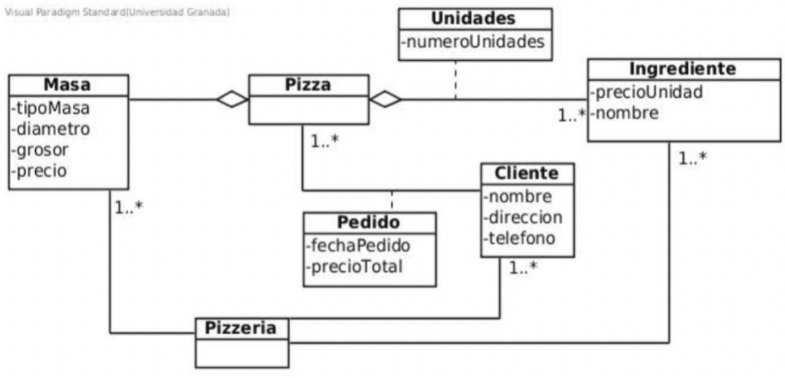
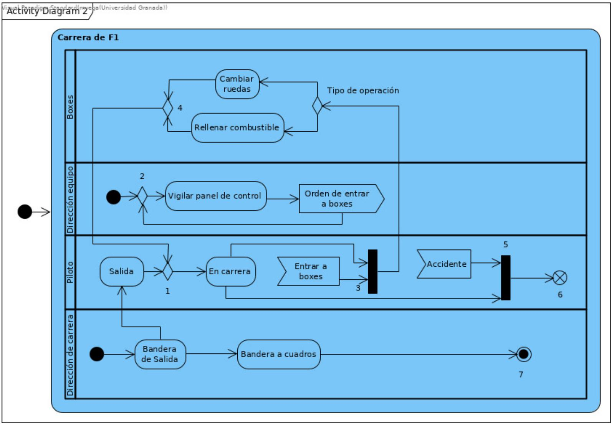

1. La validación de requisitos consiste en comprobar que el software cumple con las expectativas del cliente.
2. Las clases que forman parte de un Diagrama de Clases del Diseño (DCD) se identifican exclusivamente a partir del Modelo Conceptual.
3. En el DSS tratamos el sistema como si fuera una caja negra.
4. El Contrato de una operación debe indicar qué hace una operación sin decir cómo lo hace.
5. El uso de los diagramas de comunicación o de secuencia UML para representar el modelo de interacción de objetos nos va a proporcionar distintos resultados de diseño.
6. Según el patrón "Creador", si una clase B registra objetos de la clase A, esto justifica que B tenga la responsabilidad de crear instancias de A.
7. Si una función del sistema no cambia nada de lo especificado en el modelo conceptual su contrato no tendrá poscondiciones.
8. Los diagramas de despliegue muestran la distribución lógica de las clases.
9. Los diagramas de actividad permiten representar el flujo de acciones dentro de los casos de uso.
10. En la gestión de proyectos, el camino crítico es el conjunto de actividades con la mayor holgura dentro del cronograma.
11. Las clases del diagrama de clases del diseño toman todos sus atributos de los diagramas de conceptos.
12. Los diagramas de actividad de UML es una herramienta muy adecuada para el diseño del flujo de control.
13. La generalización permite crear jerarquías de clases.
14. El mantenimiento no debe actualizar la documentación del sistema.
15. Según los estereotipos de visibilidad en los Diagramas de Comunicación, <> indica que un objeto tiene vía de comunicación con otro porque este último es una variable definida dentro de un método.
16. Los diagramas de paquetes son útiles para organizar los diagramas de casos de uso.
17. El mayor esfuerzo realizado durante el mantenimiento de un software es para adaptar el software o nuevos requisitos.
18. La especificación de requisitos debe ser completa, verificable, consistente y modificable.
19. Un cambio de estado que se describe en las poscondiciones de un contrato es la creación de un atributo.
20. El resultado del diseño de la arquitectura del software es un conjunto de subsistemas y las relaciones entre ellos.
21. En un diagrama de secuencia del sistema pueden aparecer tantos objetos como se necesiten para modelar la interacción entre ellos.
22. El Paso A.3 en la elaboración del modelo de interacción, que trata sobre la asignación de responsabilidades a objetos, se apoya fundamentalmente en los patrones de diseño de Craig Larman, especialmente Experto en Información y Creador.
23. El análisis orientado a objetos no contempla la posibilidad de herencia múltiple.
24. Los requisitos no funcionales no tienen relación con la calidad del sistema.
25. El diagrama de secuencia del sistema puede contener tantos objetos como sean necesarios para llevar a cabo una operación del sistema.
26. Los proyectos software reales raramente se adaptan a un modelo de ciclo de vida clásico o en cascada.
27. El modelo de casos de uso es la base para obtener información necesaria para el modelo conceptual.
28. El ocultamiento de información limita impacto global de las decisiones de diseño locales.
29. Todos los sustantivos que se identifiquen en los casos de uso se representan como conceptos en el diagrama conceptual.
30. El diagrama de clases de diseño se deduce de los diagramas de comunicación. Se elaboran los diagramas de comunicación y después el diagrama de clases del diseño.
31. Los requisitos de un proyecto software pueden cambiar continuamente, pero esto no es un problema ya que los sistemas software son flexibles (se adaptan a los cambios).
32. En la gestión de proyectos, un hito es un punto de control que representa el inicio de un nuevo ciclo de desarrollo.
33. El principio de modularidad es básico, sin él no tienen sentido los demás principios.
34. Los actores en un modelo de casos de uso pueden representar sistemas externos.
35. Las técnicas de estimación permiten calcular costos y tiempos del proyecto.
36. En la arquitectura MVC (Model View Controller) para cambiar la interfaz de usuario es necesario cambiar el subsistema del modelo ya que este incluye la lógica de funcionamiento del programa.
37. Los costes de mantenimiento incluyen tanto recursos directos como indirectos.
38. Todos los enlaces estereotipados con <>, <
> o <> estarán en el diagrama de clases del diseño como una asociación.
39. El principio de diseño de “Bajo Acoplamiento” busca minimizar las dependencias entre clases.
40. Un objeto pedido puede incluir más de una pizza.

41. La planificación de proyectos solo se realiza al inicio y no requiere seguimiento.
42. Un requisito de rendimiento es un ejemplo de requisito no funcional que puede tener implicaciones en la selección de la arquitectura.
43. Lo siguiente es una poscondición correcta: "se creó una lista en la que se incluye el nombre del cliente, dirección y teléfono, que se proporciona como salida de la operación".
44. Los escenarios y casos de uso son técnicas orientadas a obtener requisitos funcionales y no funcionales.
45. El análisis de riesgos es exclusivo de las fases finales de un proyecto.
46. La gestión de recursos humanos no se considera en la planificación de proyectos.
47. El mayor esfuerzo durante el proceso de producción del software se realiza en la etapa de desarrollo.
48. El mantenimiento correctivo ocurre exclusivamente después de la entrega del producto final.
49. El análisis orientado a objetos facilita la transición entre el análisis y el diseño del sistema.
50. Los modelos del análisis pueden contener tantas inconsistencias como consideremos oportunas, puesto que no son la solución del problema.
51. Con el análisis orientado a objetos sólo se modelan las propiedades estáticas del ámbito del problema.
52. Los requisitos no funcionales suelen describir cualidades o restricciones del sistema.
53. La especificación de requisitos debe evitar la ambigüedad para facilitar el desarrollo posterior.
54. El mantenimiento correctivo incluye la adición de nuevas funcionalidades.
55. Lo siguiente es un recurso funcional "las reservas de préstamos de libros caducan a los 10 días a partir del momento que el libro esté a disposición del usuario".
56. La validación verifica que el software cumpla con las necesidades del usuario.
57. Las técnicas de prueba estáticas permiten detectar errores sin ejecutar el código.
58. La obtención de requisitos debe evitar la participación de los usuarios para no generar conflictos.
59. Las dependencias entre clases se modelan mediante asociaciones en UML.
60. Los actores representan roles que son interpretados por personas, dispositivos, otros sistemas... cuando el sistema está en uso.
61. En el diagrama de clases del diseño, los métodos:
62. El numero de iteraciones en las fases de elaboración y construcción del proceso unificado deben ser las mismas.
63. La documentación de requisitos es opcional en proyectos de ciclo de vida ágil.
64. En los diagramas de clases de diseño pueden aparecer relaciones de dependencia.
65. Los modelos de AER son: Modelo conceptual, diagramas de casos de uso y los contratos de las operaciones principales.
66. En el MC (modelo conceptual) se deben incluir las relaciones de generalización entre conceptos.
67. Los casos de uso siempre terminan dando un resultado al actor que los inició.
68. ¿Cuál de los siguientes modelos es más importante para realizar el diagrama de clases de diseño?
69. El modelo de casos de uso se usa exclusivamente para la obtención de requisitos.
70. Las relaciones de inclusión permiten reutilizar fragmentos de comportamiento en varios casos de uso.
71. Los diagramas de casos de uso permiten representar la interacción entre los actores y el sistema.
72. Es posible que en un caso de uso no tenga que intervenir el sistema software a modelar.
73. Cuando se construye un modelo conceptual es mejor añadir el mayor número posible de asociaciones entre conceptos.
74. El caso de uso describe sólo las acciones del sistema, no las de los actores.
75. Los diagramas de despliegue muestran la distribución física de los componentes del software sobre el hardware.
76. Las relaciones de generalización en el diagrama de clases del diseño son:
77. Un modelo de casos de uso se centra en las necesidades que el usuario espera lograr al utilizar el sistema.
78. En un contrato si está relleno el apartado de las excepciones, el apartado de las precondiciones debe estar vacío.
79. Un actor puede desempeñar varios roles a lo largo del tiempo.
80. A la hora de elaborar el diagrama de comunicación de una operación son esenciales los siguientes apartados del contrato correspondiente: excepciones, precondiciones y poscondiciones.
81. El mantenimiento adaptativo consiste únicamente en corregir defectos que surgen tras la entrega del producto.
82. El diseño es una tarea clave para la calidad del producto software.
83. Las relaciones de extensión son necesarias para todos los casos de uso.
84. En el diagrama de clases del diseño, la multiplicidad se obtiene de la existencia o no de multiobjetos en los diagrama de comunicación.
85. Los requisitos no funcionales no tienen ninguna relación con los funcionales.
86. Los casos de uso permiten describir el punto de vista de los usuarios del sistema.
87. Durante la etapa de definición hay que conseguir encontrar la solución software al sistema analizado.
88. La restricción {transient} aplicada a una instancia o enlace en un Diagrama de Comunicación significa que la instancia o enlace se destruye durante la interacción.
89. El diagrama de secuencia es una herramienta para describir el comportamiento dinámico del sistema.
90. El diseño de la estructura de objetos no se relaciona con los patrones de diseño.
91. En la validación de software, las pruebas de caja negra se enfocan en el diseño interno del sistema.
92. Los diagramas de Gantt ayudan a visualizar las actividades y los hitos del proyecto.
93. El análisis de requisitos consiste en examinar, delimitar y definir los requisitos del sistema.
94. Las asociaciones de navegación se obtienen a partir de las asociaciones del modelo conceptual.
95. Las dependencias representan vínculos temporales entre clases.
96. El uso de métodos de desarrollo ágiles rompen con la filosofía de equipos de trabajo organizados de forma jerárquica.
97. Los casos de uso “esenciales” son los procedimientos comunes más importantes del sistema.
98. La arquitectura cliente-servidor favorece la escalabilidad de los sistemas software, porque permite la reconfiguración añadiendo clientes y servidores extra.
99. El uso de mecanismos de abstracción en el diseño permiten obtener la modularidad adecuada de un sistema software.
100. La definición de un actor en un modelo de casos de uso puede coincidir con el concepto de clase en el análisis orientado a objetos.
101. El patrón de diseño “Experto en Información” sugiere asignar la responsabilidad a la clase que tenga la información necesaria para llevarla a cabo.
102. Un diagrama de conceptos sin operaciones es incorrecto.
103. Los actores pueden ser personas u otros sistemas externos.
104. La especificación de requisitos debe ser verificable y modificable según el estándar IEEE 830-1998.
105. Las entrevistas solo deben realizarse con los usuarios finales.
106. El número de operaciones principales de un sistema es el mismo que el número de casos de usos que tengamos.
107. El principio de diseño "Bajo Acoplamiento" busca aumentar la interdependencia entre módulos para facilitar la comunicación.
108. El objetivo de la validación y verificación es establecer confianza en la calidad del software.
109. La Especificación de Requisitos es un documento en el que se dice qué debe hacer el sistema software.
110. Los requisitos se consideran completos cuando representan exactamente lo que el cliente necesita.
111. La planificación del proyecto incluye actividades como la estimación de costos y la definición de entregables.
112. La abstracción de control se refiere al mecanismo que permite abstraer sobre el flujo de control de cualquier proceso, como reemplazar una estructura goto por un bucle while.
113. La agregación y la composición son tipos de relaciones entre clases.
114. Las relaciones de extensión permiten describir variantes de un escenario básico.
115. El diagrama de clases es una herramienta para representar el modelo estático del sistema.
116. Los prototipos siempre se transforman hasta convertirse en el programa que se entrega al cliente.
117. Los casos de uso pueden ser iniciados por un actor principal o secundario.
118. Uno de los objetivos de la fase de inicio del proceso unificado es el estudio de viabilidad del sistema a desarrollar.
119. La diferencia entre una precondición y una excepción es que la precondición no tiene que comprobarse en la operación que se está definiendo.
120. El nodo 5 es un nodo join.

121. La validación del software asegura que el producto cumple con las expectativas y necesidades del usuario.
122. Los diagramas de casos de uso representan la arquitectura física del sistema.
123. El mantenimiento incluye adaptaciones para entornos cambiantes.
124. El mantenimiento de software implica corregir errores y mejorar el rendimiento.
125. El usuario es una pieza importante en el proceso de validación de las especificaciones del software.
126. La relación de inclusión se usa para reutilizar comportamientos en varios casos de uso.
127. Cuando comienza la actividad "Carrera de F1" se activan las calles "Dirección de carrera" y SI "Dirección de equipo".
128. El proceso de obtención de requisitos no incluye la descripción de implicados o actores relevantes.
129. Un sistema informático externo a la aplicación con el que ésta debe interaccionar puede definirse como actor.
130. Los diagramas de casos de uso son parte del modelo de análisis del sistema.
131. Un requisito funcional describe cómo debe comportarse el sistema y cómo reacciona ante ciertos estímulos.
132. Los paquetes durante el diseño arquitectónico son una representación física de los subsistemas.
133. El patrón experto en información nos dice que el objeto responsable de hacer las cosas es el que tiene el control.
134. El modelo conceptual se representa usando un diagrama de clases que contiene las clases con sus atributos, métodos y asociaciones.
135. La validación es independiente de las expectativas del usuario.
136. La herramienta para representar el modelo de diseño de la interacción de objetos son los diagramas de clases UML.
137. Un caso de uso produce algo de valor para un actor.
138. El Paso C en la elaboración del modelo de interacción consiste en identificar los objetos que se han usado pero nunca se han creado para luego elaborar sus contratos de inicialización.
139. En el modelo conceptual hay que definir los atributos y los métodos de todas las clases.
140. Un caso de uso puede tener varios actores principales.
141. Las relaciones de dependencia en el diagrama de clases del diseño se obtienen de las asociaciones de tipo agregación fuerte.
142. ¿Cuál de las siguientes acciones empeoran el ocultamiento de información?
143. No se deben usar atributos de un concepto como clave de acceso desde otro concepto.
144. El modelo conceptual no debe incluir los nombres de rol de las asociaciones.
145. El nombre que le demos al sistema en el DSS se va a corresponder con el nombre de una clase que va a formar parte de nuestra solución.
146. La verificación dinámica de requisitos incluye técnicas de revisión estática.
147. Un caso de uso esencial describe qué hace el sistema como respuesta a una petición de algún actor, pero no cómo lo hace.
148. Los diagramas de colaboración son equivalentes a los diagramas de secuencia pero con un enfoque diferente.
149. Un ingrediente puede tener un precio diferente dependiendo de la pizza en la que esté.
150. El patrón "Controlador" (o fachada) recomienda que la lógica de la aplicación se maneje en la interfaz de usuario para asegurar una buena reutilización.
151. La semántica de la composición no permite que las partes existan independientemente del compuesto
152. Las clases del diagrama de clases del diseño toman sus atributos de los diagramas de comunicación.
153. Las tareas principales de la ingeniería de requisitos son detección, análisis, especificación, revisión y reacción de requisitos.
154. La especificación de requisitos solo debe ser utilizada durante el desarrollo inicial del software.
155. La verificación de requisitos consiste en comprobar que los requisitos documentados representen correctamente el problema.
156. Las pruebas de aceptación son realizadas únicamente por el equipo de desarrollo.
157. EL acoplamiento es un indicador de la dependencia entre módulos, cuanto más alto sea este valor mejor será el diseño.
158. Los diagramas de clases permiten representar la estructura estática de un sistema.
159. Una de las principales tareas del diseño de la arquitectura es refinar la descomposición del sistema en subsistemas.
160. La gestión de proyectos consiste en coordinar recursos, tiempo y actividades para cumplir los objetivos.
161. Las pruebas de integración se centran en cómo interactúan los componentes.
162. Un caso de uso sólo puede tener un actor principal que coincide con el que inicia el caso de uso.
163. La relación de inclusión entre casos de uso se utiliza para modelar la herencia de comportamiento entre actores.
164. Los tipos de requisitos son funcionales, no funcionales y FURPS+.
165. El incumplimiento de la planificación lleva de forma inmediata al aumento de personal en el equipo de desarrollo.
166. Los diagramas de casos de uso no incluyen relaciones entre los actores.
167. En el proceso de diseño, a mayor refinamiento...
168. La primera tarea del diseño es encontrar el diseño de la arquitectura del sistema.
169. En el diagrama de clases del diseño pueden aparecer clases que no estaban en el diagrama de conceptos construido en el modelo de análisis.
170. Nivel de acoplamiento nulo de un módulo nos garantiza un diseño de calidad.
171. Los actores de un modelo de casos de uso son siempre humanos.
172. En los diagramas de clases de diseño no se deben representar las relaciones de dependencia entre clases, solo se deben representar las de asociación y de generalización.
173. La forma más directa de identificar casos de uso es identificando los objetivos y necesidades de los actores del sistema.
174. Para elaborar el modelo de análisis es fundamental el modelo de casos de uso.
175. El análisis de riesgo incluye identificar y planificar medidas para evitar o minimizar los riesgos.
176. La verificación estática incluye pruebas dinámicas realizadas por el equipo de desarrollo.
177. La planificación de proyectos incluye la estimación de costes, recursos y tiempo.
178. En un Diagrama de Comunicación, el símbolo * antes de un número de secuencia se utiliza para representar el comportamiento condicional de un mensaje.
179. El modelo estructural del análisis está representado por el/los diagramas de secuencia del sistema.
180. Las relaciones entre actores y casos de uso son la asociación y la dependencia.
181. La descripción de casos de uso puede incluir escenarios alternativos y de error.
182. En la arquitectura multicapa las capas deben estar lo más acopladas posible.
183. El modelo conceptual no puede contener las navegabilidades de las asociaciones.
184. Los requisitos no funcionales determinan los objetivos del diseño.
185. Un patrón de diseño es la descripción del problema con su solución en un determinado contexto.
186. Uno de los problemas más importantes en el proceso de desarrollo del software es el incumplimiento de la planificación.
187. Los requisitos implícitos son aquellos que no se documentan pero que se espera que se cumplan.
188. La descripción del entorno técnico no forma parte de la obtención de requisitos.
189. Las técnicas de entrevistas estructuradas no están recomendadas para obtener requisitos.
190. Los actores tienen que ser necesariamente los identificados como usuarios del sistema.
191. La generalización y la herencia en el análisis orientado a objetos son equivalentes en todos los contextos de modelado.
192. Lo siguiente es un requisito NO funcional de facilidad de uso "el entorno debe avisar al usuario mediante email tras días antes de que finalice el plazo del préstamo".
193. El diseño de casos de uso consiste en detallar las interacciones entre los actores y el sistema.
194. Cuando un objeto se pasa como parámetro, en el diagrama de comunicación de la operación los enlaces con ese objeto tendrán una visibilidad del tipo <>.
195. Según los patrones de diseño de Craig Larman (GRASP), el patrón "Experto en Información" sugiere asignar una responsabilidad a la clase que contiene la información necesaria para llevarla a cabo.
196. Las operaciones de las clases en un Diagrama de Clases del Diseño (DCD) se identifican principalmente a partir de los atributos definidos en el Modelo Conceptual.
197. Las relaciones entre los casos de uso pueden ser asociación, generalización y dependencia.
198. El diagrama de comunicación forma parte del diseño de la estructura de objetos.
199. Las clases que aparezcan en el modelo de dominio son las únicas que tendrán el diagrama de clases del diseño.
200. El modelo de comportamiento se obtiene a partir del modelo conceptual.
201. La verificación asegura que el software cumpla con las especificaciones técnicas.
202. Un alto nivel de "Alta Cohesión" para una clase implica que modela un solo concepto abstracto con un pequeño conjunto de responsabilidades íntimamente relacionadas.
203. Un caso de uso puede ser iniciado por un actor o por un usuario.
204. Es mejor que las actividades de verificación las lleve a cabo el mismo equipo que haya hecho el desarrollo.
205. Un componente en la arquitectura de software debe tener una interfaz que exponga todos sus métodos internos.
206. Los diagramas de secuencia no pueden representar flujos alternativos de un caso de uso.
207. El proceso de análisis de requisitos ayuda a refinar, estructurar y describir los requisitos del sistema.
208. Las pruebas dinámicas y estáticas forman parte de la verificación.
209. Los patrones de diseño para la asignación de responsabilidades a objetas ayudan a obtener el diagrama de clases del diseño.
210. Los requisitos no funcionales definen los criterios de calidad del sistema software.
211. Cada caso de uso debe tener un nombre descriptivo y claro.
212. El diseño es el proceso de refinamiento, en el que partiendo de modelos del análisis vamos añadiendo información hasta completar el diseño.
213. El acoplamiento indica dependencia entre módulos. Cuanto más alto mejor es el diseño.
214. Las pruebas de validación confirman que el sistema cumple los requisitos del usuario.
215. Los requisitos no funcionales suponen limitaciones para el diseño de un sistema software.
216. En un diagrama de secuencia del sistema pueden aparecer tantos objetos como necesitemos para modelar la interacción entre ellos y con los actores.
217. Para obtener un buen diseño, cada módulo debe presentar un bajo nivel de cohesión.
218. La Etnografía es una técnica de obtención de requisitos que consiste en preguntar a los trabajadores de un negocio sobre la forma en que realizan sus tareas.
219. Los actores en un modelo de casos de uso pueden ser internos o externos.
220. La fase de mantenimiento del software puede implicar cambios en la arquitectura de alto nivel del sistema.
221. Las relaciones de generalización son la única forma de representar relaciones entre casos de uso.
222. La herencia simple y múltiple son formas de generalización.
223. Un enlace entre objetos en un diagrama de colaboración especifica un camino a lo largo del cual un objeto puede enviar mensajes a otro o a sí mismo.
224. Un concepto no debe incluir los atributos de otros conceptos que indiquen las relaciones entre ellos.
225. Una característica de los métodos ágiles es las entregas frecuentes.
226. El modelo de casos de uso puede ser usado como guía para el diseño de la interfaz de usuario y para facilitar la construcción de prototipos.
227. La priorización de requisitos es innecesaria cuando todos los requisitos tienen la misma importancia.
228. Las vías de comunicación o enlaces entre objetos en un diagrama de colaboración son bidireccionales.
229. El patrón experto en información propone asignar una responsabilidad a la clase que conoce la información necesaria para llevarla a cabo.
230. La detección de conflictos entre los requisitos es una de las principales actividades del análisis de requisitos.
231. La gestión de proyectos no se basa en estándares internacionales.
232. El diseño de casos de uso es independiente de los requisitos del sistema.
233. La facilidad de mantenimiento es una característica deseable en el software.
234. La definición de clases y sus atributos no se considera en el diseño de la estructura de objetos.
235. Contra del patrón experto en información: va en contra de principios de acoplamiento y cohesión.
236. El análisis de la productividad permite realizar una buena gestión de proyectos.
237. Un enlace entre objetos estereotipado como local <> nos está indicando que esa vía de comunicación queda establecida para cualquier otra colaboración entre esos objetos.
238. La validación de la especificación no forma parte de la Ingeniería de requisitos.
239. La especificación de requisitos representa los requisitos de manera informal y no debe ser completa.
240. Cuando se alcanza el nodo 6 termina la actividad "Carrera de F1".
241. El análisis orientado a objetos solo considera los aspectos estáticos del dominio.
242. El patrón experto en información nos ayuda a conocer qué clases son las encargadas de crear y destruir objetos en un DC (diagrama de comunicación).
243. Ejemplo de requisito funcional: La aplicación debe ser fácil de utilizar, e incluir ayudas en línea fáciles de entender.
244. Los diagramas de paquetes pueden servir para organizar tanto clases como casos de uso.
245. La clasificación de los requisitos según su ámbito distingue entre requisitos funcionales, no funcionales y de información.
246. El modelo conceptual o modelo de dominio es básico para especifiar las postcondiciones de un contrato.
247. El uso del patrón controlador en la elaboración del modelo de diseño se hace para reducir el nivel de acoplamiento entre los elementos de la interfaz de usuario y los que modelan la solución.
248. La planificación incremental de un proyecto implica la definición de requisitos únicamente al inicio del ciclo de vida.
249. El modelo de prototipos es un buen método para validar los requisitos de los usuarios en cualquier proyecto de desarrollo de software.
250. Una mala solución para remediar el retraso en la entrega de un proyecto software es la llamada "horda mongoliana".
251. Un requisito no funcional puede influir en la estructura de datos de un sistema pero no en su arquitectura de componentes.
252. El número de secuencia de un mensaje en un Diagrama de Comunicación se construye como una concatenación de números que indican la prioridad del mensaje en la secuencia general.
253. Un diagrama de secuencia del sistema es un diagrama de secuencia de UML en el que se muestran los eventos generados por los actores.
254. En el Diagrama de Clases del Diseño (DCD), los enlaces estereotipados con <>, <> o <> en los Diagramas de Comunicación se representan como una asociación entre clases.
255. Uno de los objetivos del análisis es conseguir los requisitos del software a partir de los requisitos de usuario mediante un proceso de refinamiento.
256. La arquitectura de un sistema software facilita la comprensión de la estructura global del sistema.
257. El mantenimiento es la etapa que menos recursos consume en el ciclo de vida del software.
258. La navegabilidad de las asociaciones en el diagrama de clases del diseño se obtiene teniendo en cuenta la dirección en los envíos de mensaje en los diagramas de comunicación.
259. Uno de los pasos a realizar en la elaboración del modelo de interacción de objetos es la incorporación de las asociaciones entre las clases de objetos.
260. Al elaborar el DC de una operación son esenciales los siguientes apartados del contrato: excepciones, precondiciones y poscondiciones.
261. Un participante en un diagrama de secuencia puede ser un objeto individual o un multiobjeto.
262. La gestión de proyectos considera factores humanos como habilidades y experiencia.
263. Las relaciones de asociación entre clases deben ser bidireccionales para asegurar la consistencia del modelo.
264. La satisfacción del cliente puede verse afectada por retrasos en el mantenimiento.
265. Un modelo de casos de uso lo componen los diagramas de casos de uso y la especificación de actores y casos de uso.
266. El diagrama de clases de análisis no puede ser refinado durante la etapa de diseño.
267. Hacer diagramas de comunicación es sitemático, no interviene la creatividad del diseñador.
268. En el diagrama de conceptos no deben aparecer atributos no primitivos.
269. Las relaciones de composición en UML son menos restrictivas que las relaciones de agregación.
270. En el diagrama de clases del diseño:
271. Una de las ventajas al incluir las relaciones entre los casos de uso es que se reduce el texto generado en la descripción de los casos de uso.
272. El diagrama de componentes especifica el hardware físico sobre el que se ejecutará el sistema software.
273. Las tareas del diseño de software, según la estructura temática, incluyen el diseño de los casos de uso, pero este se realiza después de haber completado el diseño de la estructura de objetos (Diagrama de Clases del Diseño).
274. La especificación de requisitos nunca debe incluir restricciones tecnológicas.
275. Las actividades del análisis incluyen la priorización y la verificación de requisitos.
276. El mantenimiento perfectivo busca optimizar el rendimiento y la eficiencia del sistema.
277. El análisis orientado a objetos facilita la evolución del sistema durante su mantenimiento.
278. Las asociaciones representan las relaciones permanentes entre objetos.
279. Los problemas de la ingeniería de requisitos suelen incluir dificultades de comunicación entre el cliente y los desarrolladores.
280. La validación de software puede realizarse antes de la verificación para asegurar la coherencia interna del sistema.
281. El modelo conceptual debe representar cualquier tipo de relación que se dé entre los conceptos que forman parte de él.
282. Una consecuencia buena del patrón "Experto en Información" es que en ocasiones va en contra de los principios de acoplamiento o de cohesión.
283. En la validación de requisitos, la inspección formal busca identificar ambigüedades y omisiones.
284. El proceso de obtención de requisitos comienza con la identificación de las necesidades y características del sistema.
285. Una asociación es una conexión significativa y relevante entre conceptos.
286. El análisis orientado a objetos representa los requisitos desde la perspectiva de los procesos de negocio.
287. Durante el análisis se crea un modelo conceptual que representa los principales conceptos del dominio del problema.
288. ¿Qué principio del diseño facilita el trabajo independiente y concurrente de un equipo software?
289. La evolución del software es una parte esencial del mantenimiento.
290. Los casos de uso ayudan a comprender el alcance y los límites del sistema.
291. Una de las funciones de la relación de inclusión en los casos de uso es descomponer un caso de uso complejo y largo en varios, para facilitar su comprensión.
292. El uso del patrón controlador aumenta el número de conexiones entre las capas de interfaz de dominio. Esto implica que aumenta su acoplamiento.
293. Los patrones de diseño se consideran herramientas exclusivamente para el diseño de la arquitectura y no para la especificación de requisitos.
294. La ingeniería de requisitos se ocupa de identificar y documentar las necesidades del cliente para construir un software que las satisfaga.
295. El análisis de requisitos permite descubrir los conflictos existentes entre los requisitos.
296. Los diagramas de paquetes se usan para representar la estructura de los diagramas de casos de uso.
297. El tipo de relación entre actor y CU es de asociación.
298. Durante la obtención de requisitos se debe identificar tanto los requisitos funcionales como los no funcionales.
299. Un caso de uso puede generar más de una operación en el diagrama de secuencia del sistema.
300. Durante la obtención de requisitos, es importante elaborar una lista de participantes.
301. Los patrones de diseño pueden facilitar la extensibilidad y la reutilización del software.
302. Los diagramas de actividad ayudan a representar los flujos de acciones en los casos de uso.
303. Una de las actividades principales de la obtención de requisitos es identificar y describir a los implicados o stakeholders.
304. Los diagramas de clases no forman parte de este diseño.
305. Un requisito no funcional puede, en ocasiones, convertirse en un requisito funcional durante la evolución del sistema.
306. En los diagramas de clases no pueden aparecer relaciones de generalización.
307. El diagrama de casos de uso representa la vista interna del sistema.
308. Las pruebas unitarias validan los requisitos globales del sistema.
309. Con la abstracción de datos se abstraen sobre el funcionamiento para conseguir una estructura modular basada en procedimientos.
310. Un requisito funcional describe el comportamiento del sistema.
311. ¿Cuando el diseño de la arquitectura no es conveniente?
312. El diseño arquitectónico establece la estructura global del sistema.
313. La identificación de los implicados facilita la obtención de requisitos.
314. Diseño es el proceso de aplicar distintos métodos, herramientas y principios con el propósito de definir un dispositivo, proceso o sistema con el suficiente detalle como para permitir su realización física.
315. El modelo de casos de uso representa las interacciones entre actores y sistema.
316. El mantenimiento adaptativo consiste en corregir errores del sistema.
317. Los diagramas de paquetes pueden ayudar a organizar los casos de uso.
318. Durante el análisis no se estudia la solución que se va a proponer al problema planteado, eso se deja a la fase de diseño.
319. El diseño de software es principalmente el proceso de verificar y validar que el software construido cumple con los requisitos del análisis.
320. Los contratos de las operaciones son elementos del modelo dinámico.
321. Cuando establecemos una relación de generalización entre clases todas las subclases deben cumplir con la regla “es-un”.
322. El modelo conceptual en el análisis de requisitos debe ser completamente independiente de cualquier restricción técnica o de implementación.
323. En el diagrama de clases del diseño pueden aparecer nuevas clases, es decir, que no estén en el modelo conceptual.
324. El camino crítico se determina considerando la holgura de cada actividad.
325. Las relaciones que se dan entre casos de uso es la dependencia y la generalización.
326. El modelado de casos de uso solo puede ser usado en la etapa de detección de requisitos.
327. El rendimiento es uno de los problemas importantes del diseño arquitectónico usando multicapas.
328. La descripción de un caso de uso incluye actores, precondición y poscondición.
329. La restricción de UML {new} se usa en los DC (diagramas de comunicación) para representar la creación de un objeto o la creación de un enlace entre 2 objetos.
330. Los estereotipos de visibilidad representan tipo de acceso que se da entre objetos en los DC.
331. Un nivel de acoplamiento alto y de cohesión bajo en un módulo garantiza un diseño de calidad.
332. La entrevista es una técnica encaminada a obtener información sobre el sistema mediante el diálogo con los expertos en el dominio del problema.
333. El diseño de la estructura de objetos incluye la definición de operaciones y atributos, pero no de restricciones de visibilidad.
334. Antes de definir una subclase en un modelo conceptual se debe comprobar que cumple las reglas del 100% y del “es-un”.
335. Un escenario de un caso de uso puede tener múltiples flujos de eventos, incluyendo errores y excepciones.
336. El modelo del diseño se considera una elaboración o refinamiento del modelo del análisis, incorporando detalles técnicos para la implementación.
337. La planificación de proyectos no contempla los recursos necesarios.
338. Un concepto debe incluir los atributos que indique las asociaciones que tienen otros conceptos.
339. El proceso unificado es un modelo de proceso dirigido por casos de uso.
340. El número de módulos de un sistema software debe ser cuantos más mejor, pues así garantizamos la independencia modular de cada uno de ellos.
341. La descripción extendida de un caso de uso complementa a la básica con mayor nivel de detalle.
342. Un caso de uso esencial describe una actividad que es imprescindible para el funcionamiento del sistema que modela.
343. Las actividades de planificación deben ser revisadas y actualizadas regularmente.
344. Los actores siempre son usuarios finales del sistema.
345. La verificación dinámica de requisitos es innecesaria cuando se han realizado inspecciones estáticas exhaustivas.
346. Los diagramas de actividad se usan como complemento a la descripción de un caso de uso complejo.
347. El modelo de comportamiento estático representa la interacción entre objetos en tiempo de ejecución.
348. El diseño de la estructura de objetos permite definir cómo se comunican los objetos del sistema.
349. Los requisitos funcionales son independientes de los requisitos no funcionales.
350. El diagrama de clases del diseño describe la estructura:
351. Respecto a la independencia modular, rasgos en diseño de un módulo:
352. Las técnicas etnográficas permiten comprender mejor el contexto de uso real del sistema.
353. El mantenimiento del software nunca introduce nuevos errores en el sistema.
354. El mantenimiento perfecto se centra en corregir errores sin introducir nuevas características.
355. El modelo de casos de uso permite determinar con facilidad los requisitos no funcionales del sistema.
356. Para incorporar generalizaciones es necesario encontrar clases conceptuales con elementos comunes.
357. Las pruebas de regresión son importantes durante el mantenimiento.
358. Los diagramas de interacción y los diagramas de actividad UML son herramientas de diseño que permiten representar lo mismo, son equivalentes.
359. El mantenimiento adaptativo busca que el software se adapte a nuevos entornos.
360. La especificación de requisitos puede ser complementada con modelos matemáticos y simulaciones.
361. El análisis orientado a objetos representa los requisitos desde la perspectiva de los objetos del dominio del problema.
362. Los Diagramas de Secuencia y los Diagramas de Comunicación de UML son semánticamente equivalentes, aunque destacan aspectos diferentes de la interacción.
363. Este modelo conceptual está mal, faltaría incluir la navegabilidad que hay entre Pizza y Masa, pues una pizza es la que está formada por la masa, igualmente ocurre entre Pizza e Ingrediente.
364. Un caso de uso puede describir explícitamente un requisito no funcional mediante relaciones de extensión.
365. Las bases principales para obtener los diagramas de comunicación son los contratos y el modelo conceptual.
366. Un Diagrama de Secuencia del Sistema se puede corresponder con un caso de uso, con un diagrama de casos de uso o con todo el sistema.
367. Una de las actividades del análisis de requisitos es detectar conflictos entre los requisitos.
368. Las inspecciones de software permiten detectar defectos sin ejecutar el sistema.
369. La cohesión es indicador de la unión formal de los elementos que forman un módulo.
370. El modelado de casos de uso ayuda a delimitar el sistema y el contexto de uso.